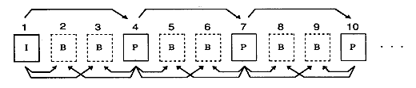
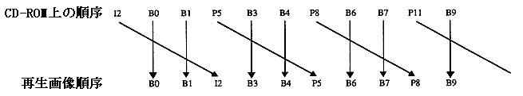

★PROGRAMMER'S GUIDE
★MPEGライブラリ
★PROGRAMMER'S GUIDE
★MPEGライブラリ
用語 | 意 味 |
|---|---|
MPEGバッファ | MPEG／VideoLSIが管理しているメモリ領域。 |
フレームバッファ | デコードされたイメージデータが格納される領 |
フレームバンク | MPEGビデオストリームの1ピクチャ分のイメージ |
VBVバッファ | MPEGビデオストリームをデコードするために用 |
ディスプレイウィンドウ | MPEG動画が出力されるTVモニタ上の矩形領域。 |
フレームバッファウインドウ | フレームバッファに対して設定される矩形領域。 |
輝点 | ディスプレイ上の最小の表示単位。 |
画素 | 通常解像度で2×2輝点、高精細解像度で1×1輝点 |
イメージデータ | デコードされたカラーデータ。ホスト領域へは16 |
MPEGウィンドウ | ディスプレイウィンドウとフレームバッファウィ |
MPEG動画ハンドル | MPEG動画を制御するためのオブジェクト。 |
MPEG静止画ハンドル | MPEG静止画を制御するためのオブジェクト。 |
MPEGハンドル | MPEG動画ハンドルとMPEG静止画ハンドルの総称。 |
MPEGレポート | MPEGシステムの状態をあらわすデータ。 |
ピクチャタイプ | 説 明 |
|---|---|
Iピクチャ | 自分自身の情報のみから復号できる画像。圧縮効 |
Pピクチャ | 予測画像として、すでに復号化された他のピク |
Bピクチャ | 予測画像として前後の二つのピクチャ（I、P）を使用 |
図2.1 ピクチャ間の予測関係

図2.2 CD-ROM上の順序と再生画像順序

★PROGRAMMER'S GUIDE
★MPEGライブラリ